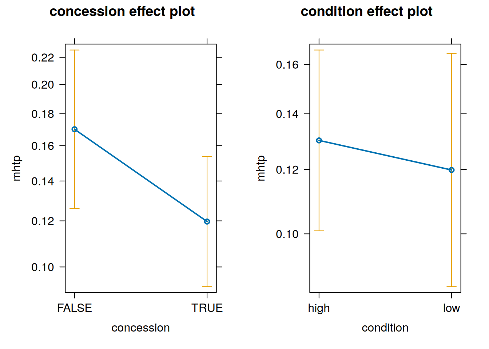
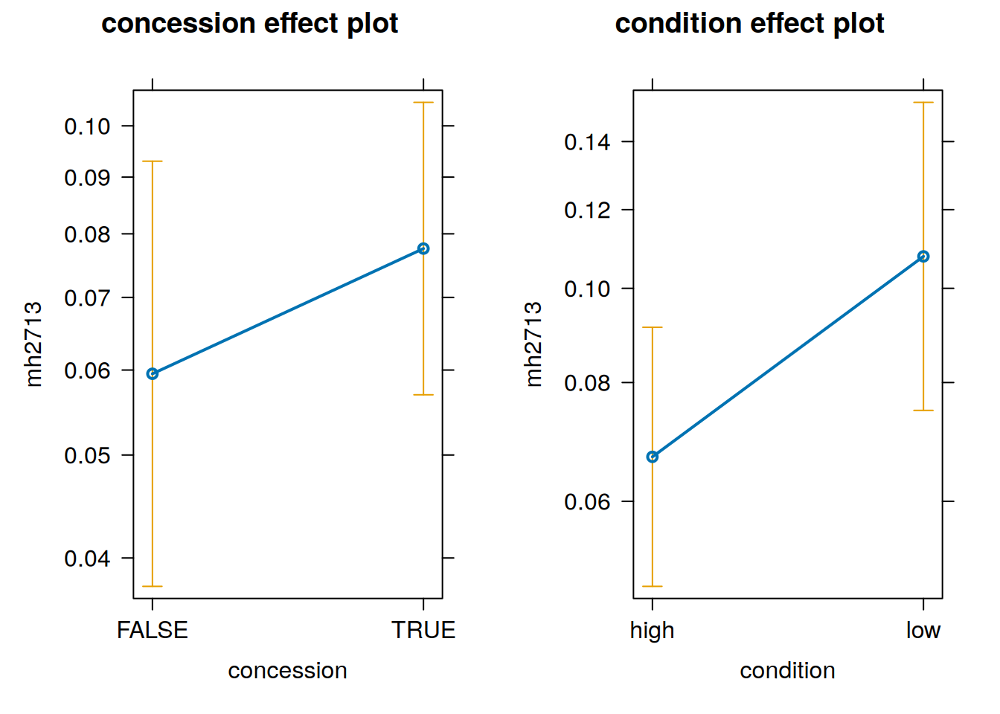
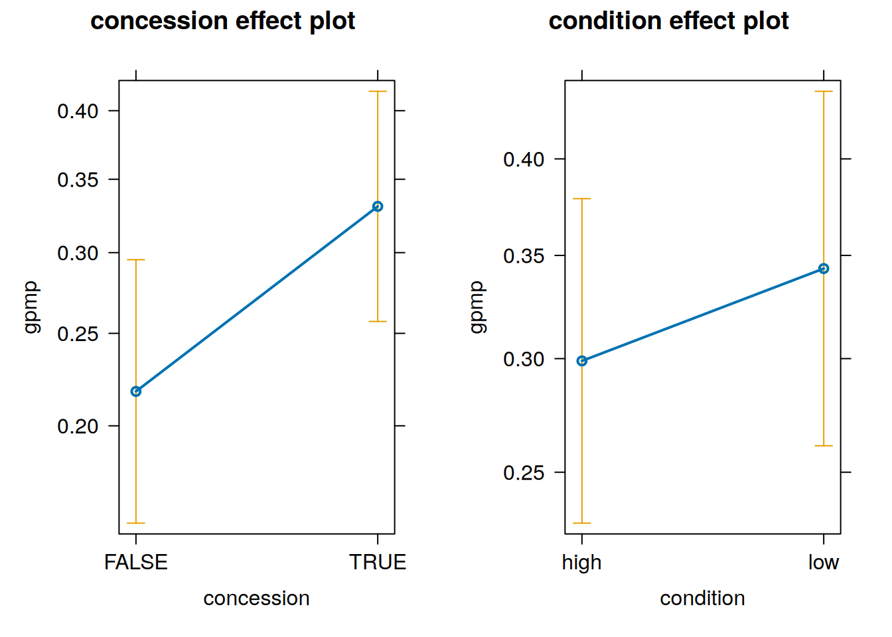
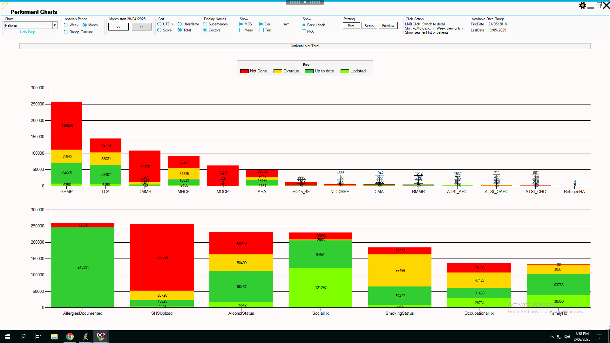
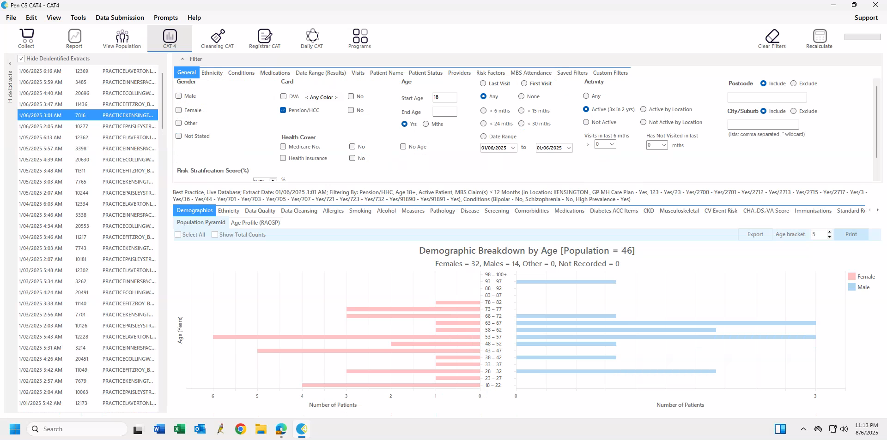

Show the code
library(dplyr)
library(tidyr)
library(lme4)
library(table1)
library(flextable)
library(officer)
library(ggplot2)
library(highcharter)
library(effects)
library(modelsummary)
library(wesanderson)library(dplyr)
library(tidyr)
library(lme4)
library(table1)
library(flextable)
library(officer)
library(ggplot2)
library(highcharter)
library(effects)
library(modelsummary)
library(wesanderson)# Statistics derived from Doctor's Control Panel
# for the four weeks starting from 28th April 2025
# see Appendix "Proportion of patients eligible and who have a mental health treatment plan
# number of mental health treatment plans, cohealth and 'other'
n_mhtp_cohealth <- 43+441
n_mhtp_other <- 2455 + 16839
# number of patients with mental health conditions
n_mentalhealth_cohealth <- 43+441+1201+1441
n_mentalhealth_other <- 2455+16839+34885+36287
# total number of patients
n_total_cohealth <- 5557+720
n_total_other <- 245991+12826cohealth, a community health service in inner-west urban Melbourne, has a relatively high proportion of patients with mental health conditions. According to statistics derived from a clinical decision support tool (Doctor’s Control Panel, 49.8% of patients consulted by cohealth clinics in the four weeks from 28th April 2025 are eligible for a mental health treatment plan (i.e. have a recorded mental health condition), compared to a national average of 35.0% nationally among practices which use Doctor’s Control Panel (see Section 5.1).
That cohealth medical clinic patients have a relatively high proportion of mental health conditions is consistent with other available statistics. At one of the cohealth general practice sites, Kensington, approximately 6.7% of consultations (52 of 7741) are with patients who have a recorded low-frequency mental health condition (schizophrenia or bipolar affective disorder) compared to the Australian general practice average of 0.5%2. To help meet the needs of cohealth patients with mental health conditions, cohealth medical clinics work closely and co-operatively with area mental health services (e.g. Inner West Area Mental Health Service) and cohealth clinics also employ mental health nurses through the Primary Health Network CAREinMIND program.
# Data for the first plot
# patients with a recorded mental health condition
df1 <- data.frame(
Clinic = c("cohealth", "Other clinics"),
Percentage = c(
round(n_mentalhealth_cohealth/n_total_cohealth * 100, 1),
round(n_mentalhealth_other/n_total_other * 100, 1)
)
)
# Data for the second plot
# consults with patients who have a low-frequency mental health condition
df2 <- data.frame(
Clinic = c("cohealth, Kensington", "Other clinics"),
Percentage = c(round(52/774*100, 1), 0.5)
)
# Choose a Wes Anderson palette (e.g., 'Rushmore')
palette <- wes_palette("Darjeeling1", 2, type = "discrete")
hc1 <- highchart() %>%
hc_chart(type = "column") %>%
hc_title(text = "Patients with Recorded Mental Health Condition") %>%
hc_xAxis(categories = df1$Clinic) %>%
hc_yAxis(title = list(text = "Proportion (%)")) %>%
hc_add_series(
name = "Proportion",
data = df1$Percentage,
colorByPoint = TRUE,
colors = palette
) %>%
hc_tooltip(pointFormat = "<b>{point.y}%</b>") %>%
hc_legend(enabled = FALSE)
# Second highcharter plot
hc2 <- highchart() %>%
hc_chart(type = "column") %>%
hc_title(text = "Proportion of consultations with patients with recorded Low-Frequency Mental Health Disorder") %>%
hc_xAxis(categories = df2$Clinic) %>%
hc_yAxis(title = list(text = "Proportion (%)")) %>%
hc_add_series(
name = "Proportion",
data = df2$Percentage,
colorByPoint = TRUE,
colors = palette
) %>%
hc_tooltip(pointFormat = "<b>{point.y}%</b>") %>%
hc_legend(enabled = FALSE)hc1
hc2To encourage general practitioners to provide a structured framework for assessing, managing and coordinating the mental health care of patients with mental health conditions, the Medicare Benefits Schedule (MBS) provides reimbursement for general practitioners to write (and bill) ‘GP Mental Health Treatment Plans (MHTPs)’. The preparation and billing of a mental health treatment plan also enables a patient to access Medicare rebates for private psychological services3. A secondary use of MHTP item billing, and billing of the mental health treatment plan ‘review’ item 2712, is as a - perhaps misleading - indicator of mental health services delivered in general practice4 5 6.
Although cohealth consults a high proportion of patients with recorded mental health conditions and are potentially eligible for mental health treatment plans (MHTP), a relatively small proportion of those patients have had - and been billed - an ‘up-to-date’ treatment plan i.e. within the past twelve months. At cohealth, 15.5% of eligible patients have an up-to-date treatment plan, compared to 21.3% nationally (see Section 5.1). The proportion of all patients at cohealth who have an up-to-date mental health treatment plan (7.7%) is almost indistinguishable from the proportion of other clinics (7.5%).
# Data for the first plot
# patients eligible for MHTP who have an up-to-date MHTP
df1 <- data.frame(
Clinic = c("cohealth", "Other clinics"),
Percentage = c(
round(n_mhtp_cohealth/n_mentalhealth_cohealth * 100, 1),
round(n_mhtp_other/n_mentalhealth_other * 100, 1)
)
)
# Data for the second plot
# all patients, proportion who have an up-to-date MHTP
df2 <- data.frame(
Clinic = c("cohealth", "Other clinics"),
Percentage = c(
round(n_mhtp_cohealth/n_total_cohealth * 100, 1),
round(n_mhtp_other/n_total_other * 100, 1)
)
)
# Choose a Wes Anderson palette (e.g., 'Rushmore')
palette <- wes_palette("Darjeeling1", 2, type = "discrete")
hc1 <- highchart() %>%
hc_chart(type = "bar") %>%
hc_title(text = "Eligible patients with an up-to-date mental health treatment plan (MHTP)") %>%
hc_xAxis(categories = df1$Clinic) %>%
hc_yAxis(title = list(text = "Proportion (%)")) %>%
hc_add_series(
name = "Proportion",
data = df1$Percentage,
colorByPoint = TRUE,
colors = palette
) %>%
hc_tooltip(pointFormat = "<b>{point.y}%</b>") %>%
hc_legend(enabled = FALSE)
# Second highcharter plot
hc2 <- highchart() %>%
hc_chart(type = "bar") %>%
hc_title(text = "Proportion of all patients with an up-to-date mental health treatment plan (MHTP)") %>%
hc_xAxis(categories = df2$Clinic) %>%
hc_yAxis(title = list(text = "Proportion (%)")) %>%
hc_add_series(
name = "Proportion",
data = df2$Percentage,
colorByPoint = TRUE,
colors = palette
) %>%
hc_tooltip(pointFormat = "<b>{point.y}%</b>") %>%
hc_legend(enabled = FALSE)hc1
hc2Why, despite the high prevalence of mental health conditions among cohealth clinic patients, do cohealth general practice clinics do - and bill - relatively few mental health treatment plans (MHTPs)?
When asked, cohealth general practitioners suggested reasons which can be broadly summarised as:
In detail:
Mental health treatment plans are done principally for patients to access private psychological services.
As a result, mental health treatment plans are not equivalent to referral to psychological care for patients, as at least some patients with mental health conditions can receive psychological care through other funding sources.
A general-practitioner prepared (and billed) mental health care/treatment plan does provide access to Medicare funding for private psychological services. However, increasing private psychologists charge fees in excess of the Medicare rebate for psychological services, resulting in a large ‘gap’ fee for patients7.
The size of the ‘gap fee’ is a potential barrier for some patients to access psychological services, particularly those from low socio-economic backgrounds. For patients who do not have the financial resources to pay the ‘gap fees’ of private psychological care, the preparation of a general-practitioner mental health treatment plan could be of less value compared to a patient who is not deterred by the ‘gap fee’ and is seeking Medicare subsidies for private psychological treatment.
The general practitioner may view the preparation of a mental health treatment plan to be of little use to the patient, particularly those who cannot afford to pay the ‘gap fee’ of private psychological services. Although there is some financial return for the general practitioner to prepare a mental health treatment plan, the patient may have more pressing concerns e.g. immediate counselling provided by the general practitioner, housing issues or addressing ‘physical’ health needs.
Although universal health insurance in Australia and the frequent use of bulk-billing at cohealth clinics might reduce inequity in access8 for cohealth patients living with mental health illness and low socio-economic resources, there may still be inequity in services provided in relation to need.
Some of the reasons listed can be tested through examination of practice billing compared to patient characteristics:
It is postulated that concession card holders have lower financial resources and are less able to utilise the government subsidies unlocked by MHTP plans for private psychology. This is because private psychology fees are often far greater than the government subsidy to use private psychology.
Mental health conditions can be broadly divided into low- and high- frequency mental health conditions. High-frequency mental health conditions are the common mental health conditions such as anxiety and depression. Low-frequency mental health conditions are the less common, and often more serious and lifelong conditions, of schizophrenia and bipolar affective disorder. Patients with schizophrenia and bipolar affective disorder can benefit from psychological therapies. If mental health treatment plans were done on the basis of need, it would be expected that more patients with low-prevalence conditions would have mental health treatment plans compared to patients with high-prevalence mental health conditions.
If patients with mental health conditions and a health concession card have less mental health treatment plans billed at cohealth general practices, perhaps those patients also have less mental health care delivered by those general practitioners.
There other potential ways to measure mental health care delivery in general practice.
Potential measurements:
Options (1) and (2) are relatively easy to perform with a basic database search and simple application of data science. However, at the time of writing, only option (3) is currently available to use at cohealth.
There is another billing item associated with mental health care, which is the general practitioner attendance in relation to a mental health disorder, Medicare Benefit Schedule - Item 2713. Unfortunately, MBS item 2713 is little used, because there are alternative item numbers - not specific to mental health - which are easy to use and bill13.
Nevertheless, occasionally general practitioners do claim an item 2713. One possible reason is because item 2713 - depending on the duration and content of the consult - can sometimes be ‘co-billed’ with a standard consult item (such as level B or C consult).
Are concession card holders, or patients living with low-frequency mental health disorders, billed the general practice mental health item ‘2713’ the same, more, or less than patients without concession card holders at cohealth clinics?
Another indicator of care provision is the billing of general practitioner chronic disease management plans, Medicare Benefit Schedule item 721. Chronic disease management plans are for the purpose of planning, setting goals, coordinating and reviewing an ongoing chronic condition (present for more than six months or expected to be present for more than six months). People living with mental health conditions, particularly low-frequency mental health conditions and those living with socio-economic disadvantage are more likely to live with both chronic health conditions and experience disability as the result of those conditions.
The number of mental health treatment plan (MHTP) eligible and active patients at coHealth who were billed MHTPs, mental health consult items (MBS item 2713) or chronic disease management plans (MBS item 721) in the previous twelve months were counted using PenCS, for the one year up to 1st May 2025 (for details of the extraction procedure using PenCS, see Section 5.2). The patients were divided into groups according to concession card holder patients (either health care card ‘HCC’ or pension card), high-prevalence and low-prevalence mental health disorders and the cohealth clinic site attended.
The results are analysed using R version 4.3.1. Logistic regression was used, with clinic location as a random effect14. Source code can be viewed on www.github.com/DavidPatShuiFong15 and davidfong.org16.
# outcome
# counts of patients who have had, in the past year:
# mhtp- mental health treatment plan e.g. MBS item 2715, 2717
# mh2713 - general practitioner mental health consult i.e. MBS item 2713
# gpmp - general practitioenr chronic disease treatment plan i.e. MBS item 721
#
# predictors
# concession - false = no, true = yes
# mental health condition - "high" = high-frequency, "low" = low-frequency
#
# random effects
# (not considered to be a predictor of interest)
# clinic - the clinic's name, a categorical variable
# the initial data was created as counts (i.e. aggregated data)
# the original patient data can be recreated from the counts
summary_df <- tibble(
concession = logical(),
condition = factor(),
clinic = character(),
total = integer(), # number in this patient category (concession, condition, clinic) occurs
mhtp = integer(), # number who had a mental health treatment plan (MHTP e.g. 2715/2717)
mh2713 = integer(), # number who had a billed GP mental health consult (MBS item 2713)
gpmp = integer() # number who had a chronic disease management plan (MBS item 721)
)
summary_df <- summary_df |>
add_row(concession = TRUE, condition = "high", clinic = "Kensington", total = 285, mhtp = 42, mh2713 = 13, gpmp = 109) |>
add_row(concession = TRUE, condition = "low", clinic = "Kensington", total = 73, mhtp = 7, mh2713 = 7, gpmp = 33) |>
add_row(concession = FALSE, condition = "high", clinic = "Kensington", total = 84, mhtp = 9, mh2713 = 4, gpmp = 19) |>
add_row(concession = FALSE, condition = "low", clinic = "Kensington", total = 8, mhtp = 2, mh2713 = 0, gpmp = 3) |>
add_row(concession = TRUE, condition = "high", clinic = "Paisley", total = 430, mhtp = 26, mh2713 = 42, gpmp = 164) |>
add_row(concession = TRUE, condition = "low", clinic = "Paisley", total = 123, mhtp = 13, mh2713 = 10, gpmp = 58) |>
add_row(concession = FALSE, condition = "high", clinic = "Paisley", total = 131, mhtp = 21, mh2713 = 14, gpmp = 26) |>
add_row(concession = FALSE, condition = "low", clinic = "Paisley", total = 8, mhtp = 1, mh2713 = 0, gpmp = 4) |>
add_row(concession = TRUE, condition = "high", clinic = "Laverton", total = 79, mhtp = 14, mh2713 = 6, gpmp = 32) |>
add_row(concession = TRUE, condition = "low", clinic = "Laverton", total = 38, mhtp = 10, mh2713 = 15, gpmp = 18) |>
add_row(concession = FALSE, condition = "high", clinic = "Laverton", total = 43, mhtp = 7, mh2713 = 1, gpmp = 16) |>
add_row(concession = FALSE, condition = "low", clinic = "Laverton", total = 4, mhtp = 1, mh2713 = 1, gpmp = 1) |>
add_row(concession = TRUE, condition = "high", clinic = "Collingwood", total = 346, mhtp = 35, mh2713 = 17, gpmp = 88) |>
add_row(concession = TRUE, condition = "low", clinic = "Collingwood", total = 87, mhtp = 5, mh2713 = 10, gpmp = 20) |>
add_row(concession = FALSE, condition = "high", clinic = "Collingwood", total = 88, mhtp = 14, mh2713 = 4, gpmp = 17) |>
add_row(concession = FALSE, condition = "low", clinic = "Collingwood", total = 6, mhtp = 1, mh2713 = 0, gpmp = 1) |>
add_row(concession = TRUE, condition = "high", clinic = "Fitzroy", total = 445, mhtp = 74, mh2713 = 29, gpmp = 94) |>
add_row(concession = TRUE, condition = "low", clinic = "Fitzroy", total = 165, mhtp = 18, mh2713 = 13, gpmp = 38) |>
add_row(concession = FALSE, condition = "high", clinic = "Fitzroy", total = 91, mhtp = 20, mh2713 = 2, gpmp = 14) |>
add_row(concession = FALSE, condition = "low", clinic = "Fitzroy", total = 10, mhtp = 3, mh2713 = 1, gpmp = 1)# duplicate rows according to the weighting 'mhtp',
# hence "re-creating" the original patient-level data from the counts
mhtp <- summary_df |>
# duplicate rows by number of mental health treatment plans (mhtp)
uncount(mhtp) |>
# add back mhtp column to a logical
mutate(mhtp = TRUE) |>
# don't need 'total' column any more
select(concession, condition, clinic, mhtp) |>
bind_rows(
# do the same, except
# now duplicate rows by number who do not have mental health treatment plans
summary_df |>
mutate(no_mhtp = total - mhtp) |>
uncount(no_mhtp) |>
mutate(mhtp = FALSE) |>
select(concession, condition, clinic, mhtp)
) |>
arrange(clinic, concession, condition)
label(mhtp$mhtp) = "Mental Health Plan"
label(mhtp$concession) = "Concession card"
label(mhtp$condition) = "Condition frequency"
table1(
x = ~ mhtp + concession + Condition | clinic,
data = mhtp |>
mutate(Condition = factor(condition, label = c("High-prevalence", "Low-prevalence"))),
overall = c(left = "Total")
) |>
t1flex(tablefn = "flextable", cwidth = 0.85) |>
fontsize(size = 9, part = "all") |>
footnote(i = 1, j = 1, value = as_paragraph("Mental health treatment plans (claimed in the previous twelve months), concession card status and High- vs Low- frequency mental health conditions."), ref_symbols = "a", part = "body") |>
footnote(i = 1, j = 2, value = as_paragraph("coHealth clinics, May 2025, 'active' patients"), part = "header")
| Total | Collingwood | Fitzroy | Kensington | Laverton | Paisley |
|---|---|---|---|---|---|---|
Mental Health Plana | ||||||
Yes | 323 (12.7%) | 55 (10.4%) | 115 (16.2%) | 60 (13.3%) | 32 (19.5%) | 61 (8.8%) |
No | 2221 (87.3%) | 472 (89.6%) | 596 (83.8%) | 390 (86.7%) | 132 (80.5%) | 631 (91.2%) |
Concession card | ||||||
Yes | 2071 (81.4%) | 433 (82.2%) | 610 (85.8%) | 358 (79.6%) | 117 (71.3%) | 553 (79.9%) |
No | 473 (18.6%) | 94 (17.8%) | 101 (14.2%) | 92 (20.4%) | 47 (28.7%) | 139 (20.1%) |
Condition | ||||||
High-prevalence | 2022 (79.5%) | 434 (82.4%) | 536 (75.4%) | 369 (82.0%) | 122 (74.4%) | 561 (81.1%) |
Low-prevalence | 522 (20.5%) | 93 (17.6%) | 175 (24.6%) | 81 (18.0%) | 42 (25.6%) | 131 (18.9%) |
aMental health treatment plans (claimed in the previous twelve months), concession card status and High- vs Low- frequency mental health conditions. | ||||||
1coHealth clinics, May 2025, 'active' patients | ||||||
Concession card holders (with either high-prevalence or low-prevalence mental health conditions) have lower annual rates of mental health treatment plans billing (11.8% vs 16.7%).
People with low-prevalence conditions have a similar, if slightly lower, rate of mental health treatment plans than those with high-prevalence conditions (11.7% vs 13.0%).
# the basic model
model_mhtp <- glm(
mhtp ~ concession + condition,
family = binomial(link = "logit"),
data = mhtp
)
# add clinic as a random effect
model_mhtp_effects <- glmer(
mhtp ~ concession + condition + (1|clinic),
family = binomial(link = "logit"),
data = mhtp
)
label(mhtp$condition) = "condition"
# using 'clinic' as a random effect makes little difference to the modelplot(effects::allEffects(model_mhtp_effects))
# personalised flextable theme
my_flextable_theme <- function(x, ...) {
if (!inherits(x, "flextable")) {
stop(sprintf("Function `%s` supports only flextable objects.",
"theme_alafoli()"))
}
#fp_bdr <- officer::fp_border(width = flextable_global$defaults$border.width,
# color = flextable_global$defaults$border.color)
x <- border_remove(x) |>
bg(bg = "transparent", part = "all") |>
color(color = "#000000", part = "all") |>
# the header text bold
bold(bold = TRUE, part = "header") |>
italic(italic = FALSE, part = "all") |>
padding(padding = 3, part = "all") |>
align_text_col(align = "left", header = TRUE) |>
# the first header row is centered text
align(i = 1, align = "center", part = "header") |>
align_nottext_col(align = "right", header = TRUE) |>
# make first column wider
width(j = 1, width = 1.5) |>
# thin horizontal line between models and other column headers
hline(i = 1, j = 2:7, border = officer::fp_border(color = "grey", width = 0.5), part = "header") |>
hline_bottom(part = "header") |>
hline_top(part = "body") |>
# place horizontal line below fourth row
hline(i = 4, border = officer::fp_border(color = "grey", width = 0.5), part = "body") |>
hline_bottom(part = "body") |>
fix_border_issues()
}A slightly higher proportion of patients with concession cards (7.8%) were billed a mental health GP consult (item 2713) than those without a concession card (5.7%), though the difference is not statistically significant. A higher proportion of patients with a low-frequency mental health condition (10.9%) were billed a mental health GP consult than those with high-frequency mental health conditions (6.5%) (p=0.002).
A higher proportion of patients with concession cards (31.6%) were billed a chronic disease management plan (item 721) than those without a concession card (21.6%) (p<0.001). A higher proportion of patients with patients with low-frequency mental health conditions (33.9%) were billed a mental health GP consult than those with a high-frequency mental health condition (28.6%) (p=0.059).
# duplicate rows according to the weighting 'mh2713',
# hence "re-creating" the original patient-level data from the counts
mh2713 <- summary_df |>
# duplicate rows by number of mental health GP consults (mh2713)
uncount(mh2713) |>
# add back mhtp column to a logical
mutate(mh2713 = TRUE) |>
# don't need 'total' column any more
select(concession, condition, clinic, mh2713) |>
bind_rows(
# do the same, except
# now duplicate rows by number who do not have mental health treatment plans
summary_df |>
mutate(no_mh2713 = total - mh2713) |>
uncount(no_mh2713) |>
mutate(mh2713 = FALSE) |>
select(concession, condition, clinic, mh2713)
) |>
arrange(clinic, concession, condition)
label(mh2713$mh2713) = "Mental Health GP Consult"
label(mh2713$concession) = "Concession card"
label(mh2713$condition) = "Condition frequency"# the basic model
model_mh2713 <- glm(
mh2713 ~ concession + condition,
family = binomial(link = "logit"),
data = mh2713
)
# add clinic as a random effect
model_mh2713_effects <- glmer(
mh2713 ~ concession + condition + (1|clinic),
family = binomial(link = "logit"),
data = mh2713
)
label(mh2713$condition) = "condition"plot(effects::allEffects(model_mh2713_effects))
# duplicate rows according to the weighting 'gpmp',
# hence "re-creating" the original patient-level data from the counts
gpmp<- summary_df |>
# duplicate rows by number of GP chronic disease management plans (gpmp)
uncount(gpmp) |>
# add back mhtp column to a logical
mutate(gpmp = TRUE) |>
# don't need 'total' column any more
select(concession, condition, clinic, gpmp) |>
bind_rows(
# do the same, except
# now duplicate rows by number who do not have mental health treatment plans
summary_df |>
mutate(no_gpmp = total - gpmp) |>
uncount(no_gpmp) |>
mutate(gpmp = FALSE) |>
select(concession, condition, clinic, gpmp)
) |>
arrange(clinic, concession, condition)
label(gpmp$gpmp) = "Chronic Disease Management Plan"
label(gpmp$concession) = "Concession card"
label(gpmp$condition) = "Condition frequency"# create a combined dataframe which has the correct number of mhtp, mh2713 and gpmp
# in each clinic/concession/condition category
# note that the relationship *between* mhtp, mh2713 and gpmp in this table is not correct
combined_synthetic <- mhtp |>
mutate(mh2713 = mh2713$mh2713) |>
mutate(gpmp = gpmp$gpmp)
table1(
x = ~ mhtp + mh2713 + gpmp | concession,
data = combined_synthetic |>
mutate(concession = factor(concession, levels = c(FALSE, TRUE), label = c("No Concession", "Concession"))),
overall = FALSE
) |>
t1flex(tablefn = "flextable") |>
width(width = 2) |>
fontsize(size = 9, part = "all") |>
add_footer_lines("coHealth clinics, May 2025, 'active' patients")
| No Concession | Concession |
|---|---|---|
Mental Health Plan | ||
Yes | 79 (16.7%) | 244 (11.8%) |
No | 394 (83.3%) | 1827 (88.2%) |
Mental Health GP Consult | ||
Yes | 27 (5.7%) | 162 (7.8%) |
No | 446 (94.3%) | 1909 (92.2%) |
Chronic Disease Management Plan | ||
Yes | 102 (21.6%) | 654 (31.6%) |
No | 371 (78.4%) | 1417 (68.4%) |
coHealth clinics, May 2025, 'active' patients | ||
table1(
x = ~ mhtp + mh2713 + gpmp | condition,
data = combined_synthetic |>
mutate(condition = factor(condition, label = c("High-prevalence", "Low-prevalence"))),
overall = FALSE
) |>
t1flex(tablefn = "flextable") |>
width(width = 2) |>
fontsize(size = 9, part = "all") |>
add_footer_lines("coHealth clinics, May 2025, 'active' patients")
| High-prevalence | Low-prevalence |
|---|---|---|
Mental Health Plan | ||
Yes | 262 (13.0%) | 61 (11.7%) |
No | 1760 (87.0%) | 461 (88.3%) |
Mental Health GP Consult | ||
Yes | 132 (6.5%) | 57 (10.9%) |
No | 1890 (93.5%) | 465 (89.1%) |
Chronic Disease Management Plan | ||
Yes | 579 (28.6%) | 177 (33.9%) |
No | 1443 (71.4%) | 345 (66.1%) |
coHealth clinics, May 2025, 'active' patients | ||
# the basic model
model_gpmp <- glm(
gpmp ~ concession + condition,
family = binomial(link = "logit"),
data = gpmp
)
# add clinic as a random effect
model_gpmp_effects <- glmer(
gpmp ~ concession + condition + (1|clinic),
family = binomial(link = "logit"),
data = gpmp
)
label(gpmp$condition) = "condition"plot(effects::allEffects(model_gpmp_effects))
table_mbs_model <- modelsummary(
models = list(
"MHTP" = model_mhtp_effects,
"MH2713" = model_mh2713_effects,
"GPMP" = model_gpmp_effects
),
estimate = c("Odds ratio" = "{estimate}"),
coef_rename = c(
"concessionTRUE" = "Concession holder",
"conditionlow" = "Low-frequency condition"
),
shape = term ~ model + statistic,
exponentiate = TRUE,
statistic = c("CI (95%)" = "[{conf.low}, {conf.high}]", "p" = "{p.value}"),
output = "flextable"
) |>
my_flextable_theme() |>
add_footer_lines(
paste(
"The odds ratio of having been billed a GP mental health consultation 'MH2713'",
"or GP chronic disease management plan 'GPMP',",
"according to concession card status and low-vs-high prevalence mental health condition",
"(coHealth GP clinics, May 2025)"
)
)
table_mbs_model
| MHTP | MH2713 | GPMP | ||||||
|---|---|---|---|---|---|---|---|---|---|
| Odds ratio | CI (95%) | p | Odds ratio | CI (95%) | p | Odds ratio | CI (95%) | p |
(Intercept) | 0.209 | [0.147, 0.297] | <0.001 | 0.057 | [0.035, 0.092] | <0.001 | 0.267 | [0.177, 0.402] | <0.001 |
Concession holder | 0.664 | [0.500, 0.880] | 0.004 | 1.329 | [0.866, 2.039] | 0.193 | 1.779 | [1.393, 2.272] | <0.001 |
Low-frequency condition | 0.910 | [0.672, 1.232] | 0.543 | 1.685 | [1.208, 2.350] | 0.002 | 1.227 | [0.992, 1.516] | 0.059 |
SD (Intercept clinic) | 1.330 | 1.377 | 1.478 | ||||||
Num.Obs. | 2544 | 2544 | 2544 | ||||||
R2 Marg. | 0.008 | 0.018 | 0.018 | ||||||
R2 Cond. | 0.032 | 0.048 | 0.061 | ||||||
AIC | 1922.6 | 1335.8 | 3020.7 | ||||||
BIC | 1946.0 | 1359.1 | 3044.0 | ||||||
ICC | 0.0 | 0.0 | 0.0 | ||||||
RMSE | 0.33 | 0.26 | 0.45 | ||||||
The odds ratio of having been billed a GP mental health consultation 'MH2713' or GP chronic disease management plan 'GPMP', according to concession card status and low-vs-high prevalence mental health condition (coHealth GP clinics, May 2025) | |||||||||
model_list <- list(
"MHTP" = model_mhtp_effects,
"MH2713" = model_mh2713_effects,
"GPMP" = model_gpmp_effects
)
modelplot(
models = model_list,
coef_map = c(
'conditionlow' = "Low-frequency condition",
'concessionTRUE' = "Concession holder"
),
exponentiate = TRUE
) +
labs(
x = "Odds ratio estimates and 95% confidence intervals",
y = "Predictors",
title = "MHTP, MH2713 and GPMP billed in previous twelve months",
caption = "(coHealth GP clinics, May 2025)"
) +
scale_color_manual(values = wes_palette('Darjeeling1'))
Figures derived from Doctor’s Control Panel ‘Performance’ charts, for the four weeks starting from 28th April 2025. The charts are included below.
The total number of unique patients seen during that time period can be calculated from the numbers who are expected to have ‘Allergies Documented’, which is all patients seen. For cohealth, the figure is 5557+720 = 6277. For all practices which use Doctor’s Control Panel (‘national’), the figure is 245991+12826 = 258817.
The total number of unique patients seen during that time period considered eligible for a mental health treatment plan (because they have a recorded and coded mental health condition) can be calculated from the ‘MHTP’ (Mental Health Treatment Plan) bar. For cohealth, the figure is 43+441+1201+1441 = 3126, which is 49.8% of the total. For ‘national’ practices, the figure is 2455+16839+34885+36287 = 90466, which is 35.0% of the total.
The total number of unique patients seen during that time period who had an ‘up-to-date’ (i.e. within the previous twelve months) mental health treatment plan can be calculated from the ‘up-to-date’ and ‘updated’ sections of the MHTP bar. For cohealth, the figure is 43+441 = 484, which is 15.5% of patients with recorded mental health conditions. For ‘national’ practices, the figure is 2455 + 16839 = 19294, which is 21.3% of patients with mental health conditions.


PenCS was used to identify patients with recorded mental health conditions, whether the condition was high- or low- frequency, concession card status, patient ‘activity’, MBS item numbers billed (mental health care plans, other mental health items or chronic disease management plans) and site of attendance. The Electronic Health Record (EHR) used was Best Practice, the data extract was done on 1st May 2025, a separate extract for each of five clinic sites (Kensington, Paisley Street, Laverton, Fitzroy and Collingwood). The period of interest is the one year from 1st May 2024 to 30th April 2025.
Patient activity:

Patient high- or low- frequency mental health condition status
Patient concession card status
Patient mental health treatment plan or other item numbers
table1(
x = ~ mh2713 | clinic,
data = mh2713 |>
mutate(condition = factor(condition, label = c("High-prevalence", "Low-prevalence"))),
overall = c(left = "Total")
) |>
t1flex(tablefn = "flextable", cwidth = 0.85) |>
fontsize(size = 9, part = "all") |>
footnote(i = 1, j = 1, value = as_paragraph("Mental health GP consultations, claimed in the previous twelve months"), ref_symbols = "a", part = "body") |>
footnote(i = 1, j = 2, value = as_paragraph("coHealth clinics, May 2025, 'active' patients"), part = "header")
| Total | Collingwood | Fitzroy | Kensington | Laverton | Paisley |
|---|---|---|---|---|---|---|
Mental Health GP Consulta | ||||||
Yes | 189 (7.4%) | 31 (5.9%) | 45 (6.3%) | 24 (5.3%) | 23 (14.0%) | 66 (9.5%) |
No | 2355 (92.6%) | 496 (94.1%) | 666 (93.7%) | 426 (94.7%) | 141 (86.0%) | 626 (90.5%) |
aMental health GP consultations, claimed in the previous twelve months | ||||||
1coHealth clinics, May 2025, 'active' patients | ||||||
table1(
x = ~ gpmp | clinic,
data = gpmp |>
mutate(condition = factor(condition, label = c("High-prevalence", "Low-prevalence"))),
overall = c(left = "Total"),
) |>
t1flex(tablefn = "flextable", cwidth = 0.85) |>
fontsize(size = 9, part = "all") |>
footnote(i = 1, j = 1, value = as_paragraph("GP chronic disease management plans claimed in the previous twelve months"), ref_symbols = "a", part = "body") |>
footnote(i = 1, j = 2, value = as_paragraph("coHealth clinics, May 2025, 'active' patients"), part = "header")
| Total | Collingwood | Fitzroy | Kensington | Laverton | Paisley |
|---|---|---|---|---|---|---|
Chronic Disease Management Plana | ||||||
Yes | 756 (29.7%) | 126 (23.9%) | 147 (20.7%) | 164 (36.4%) | 67 (40.9%) | 252 (36.4%) |
No | 1788 (70.3%) | 401 (76.1%) | 564 (79.3%) | 286 (63.6%) | 97 (59.1%) | 440 (63.6%) |
aGP chronic disease management plans claimed in the previous twelve months | ||||||
1coHealth clinics, May 2025, 'active' patients | ||||||
PenCS data extract, Kensington clinic, 1st June 2025. ‘Consultation’ defined as those who (according to PenCS) have had a visit in the month of May 2025, having been billed at least one of the standard and common Medicare item numbers (3, 23, 36, 44, 123, 2713, 91890, 91891, 721, 723, 732, 701, 703, 705, 707, 2700, 2701, 2712, 2715, 2717). Each patient can only be counted once during the specified time period (one month).↩︎
“General practice activity in Australia 2015-2016”, Sydney University Press, 2016.↩︎
General Practitioner Mental Health Standards Collaboration - ‘What is a mental health treatment plan?’↩︎
“GPs rebut criticism of mental health care plan oversight”. Joyon Attwooll, RACGP newsGP, 8 August 2022.↩︎
“Myth-busting: role of the GP in primary mental health care”. Louise Stone et al, MJA Insight+, 8 August 2022.↩︎
“Access to primary mental health care remains critical”. Sebastian Rosenberg, Ian Hickie. MJA Insight+, 25 July 2022.↩︎
“Long wait times $90 gap fees preventing access to psychology services”” Australian Psychological Society, 30 January 2023.↩︎
“Socioeconomic status and accessibility to health care services in Australia”. RKatteri, Research Roundup, Primary Health Care Research and Information Services (PHCRIS), Issue 22, December 2011.↩︎
“GP visits by health care card holders (A secondary analysis of data from Bettering the Evaluation and Care of Health (BEACH), a national study of general practice activity in Australia)”. Janice Charles, Lisa Valenti, Helena Britt. Australian Family Physician, Vol 32: No. 1/2, pp 85-89. January/February 2003.↩︎
“The impact of low socioeconomic status and primary health care access on emergency department presentations in young children in regional Queensland”. Catherine McCosker, Gavin Beccaria, Lisa Beccaria, Tanya Machin. Journal of Paediatric and Child Health, Vol 59:9, pp 1035-1038. September 2023.↩︎
“Improving the physical health and wellbeing of people living with mental illness in Australia”, National Mental Health Commission (NHMC), 2016.↩︎
“General practice and the management of chronic conditions, Where to now?” (Jan Newland, Nicholas Zwar. Australian Family Physician, Jan/Feb/2006, Vol 36:No 1-2, pp 16-19). Note that the chronic disease management item numbers in use as of May 2025 are scheduled to be changed on July 2025.↩︎
MBS item 2713 has a requirement for minimum consultation length of 20 minutes, and has a rebate value of $81.70.
There is an alternative item number which can also be claimed if a consult is between 20 to 40 minutes in length, the level ‘C’ consult, MBS item 36, which has a rebate value of $82.90. Where an item 2713 could be claimed, an item 36 could be claimed instead, with greater revenue than an item 2713.
This is even more the case when a patient has a concession card. In that case, the bulk-billing incentive payment for item 36 is $14 or more (depending on the practice’s country-rural ‘MMM’ location) than the bulk-biling incentive payment for an item 2713.↩︎
It is to be noted that using clinic location as a random effect added little information to the model.↩︎